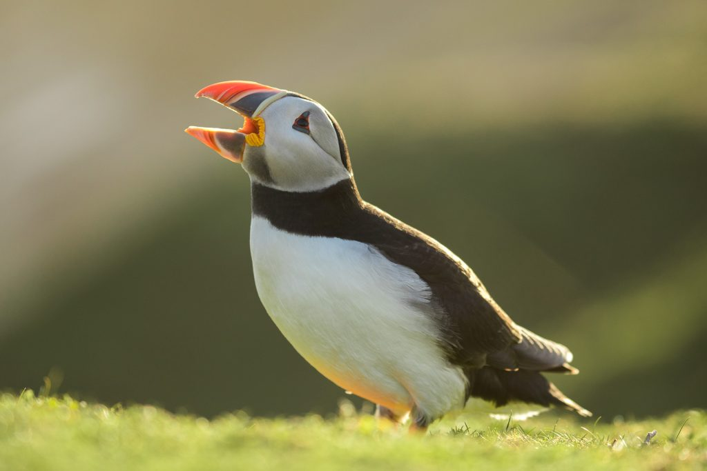
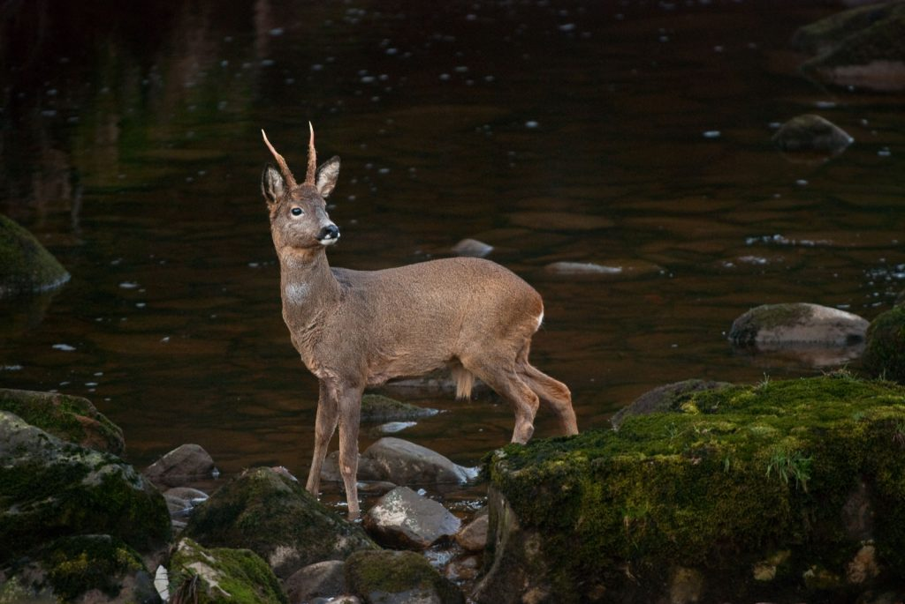
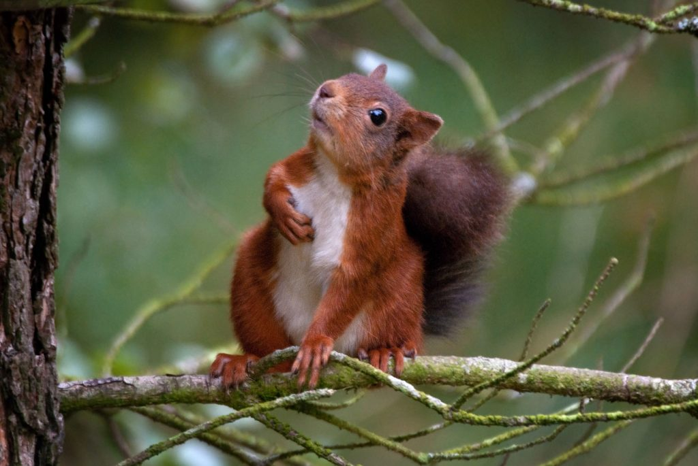
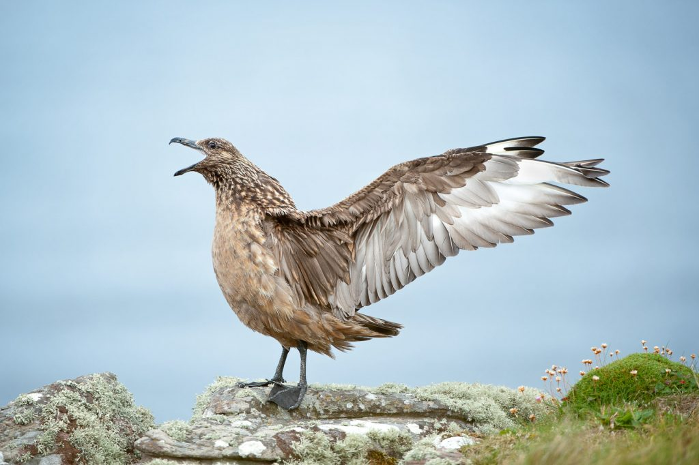
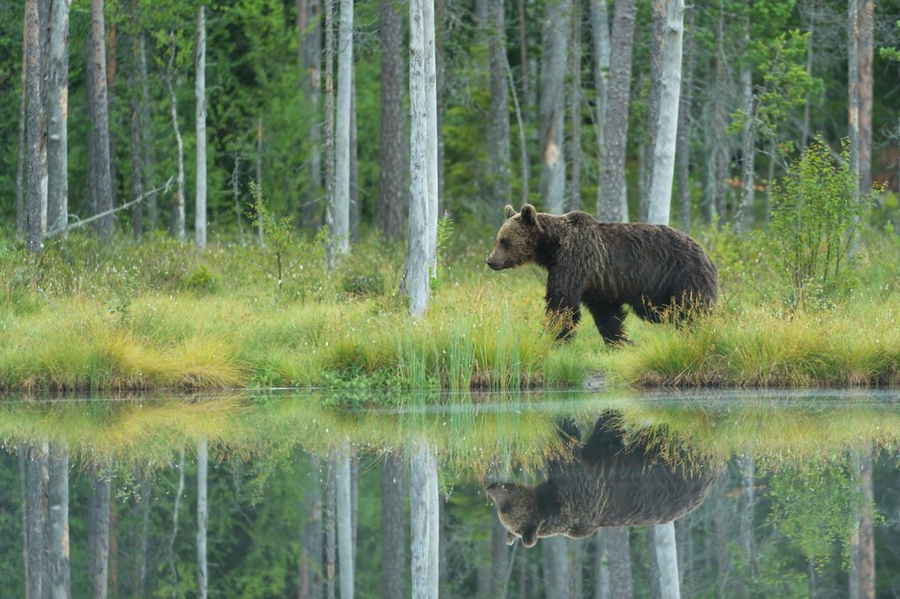
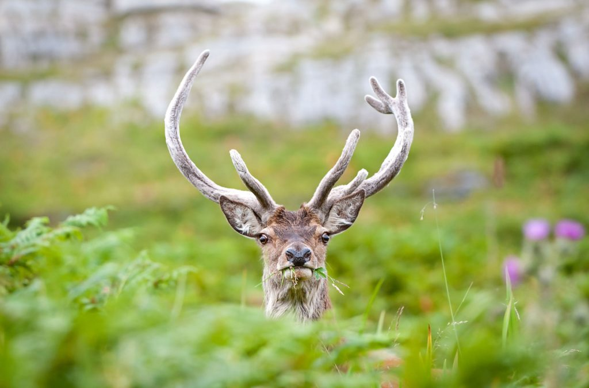
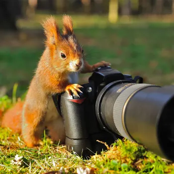
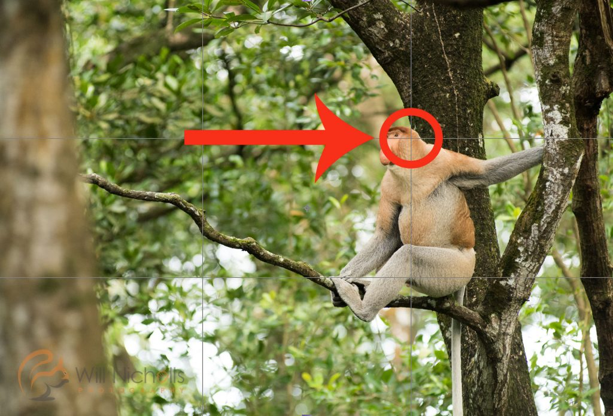
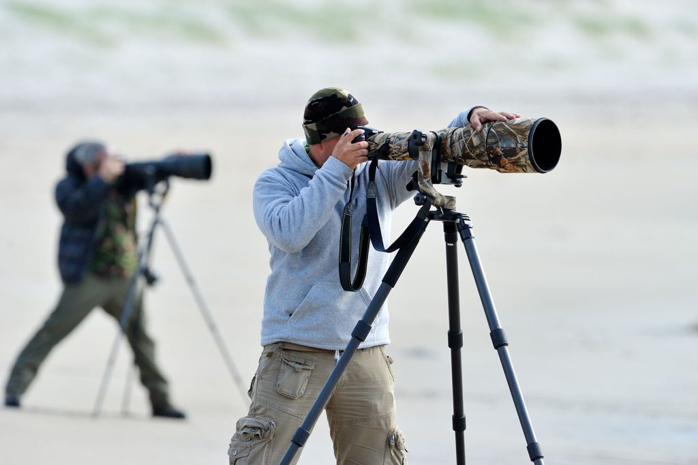
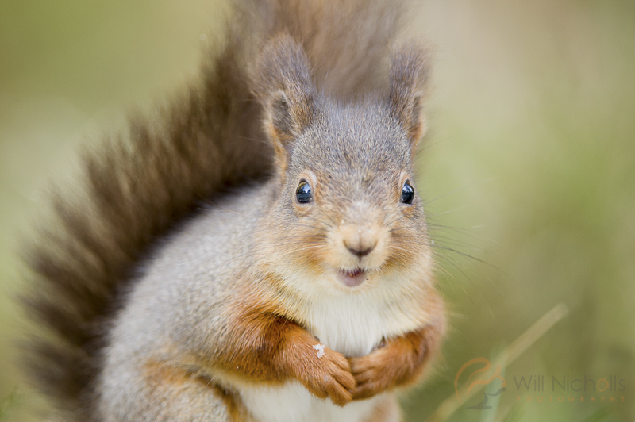

Are you starting out in the world of wildlife photography? It can be a daunting field of photography to start in. Wildlife photographers are lonesome creatures, spending most of their time behind the camera alone… watching and waiting for the perfect moment. As a wildlife photography beginner, it can be hard to know where to turn and how best to develop your skillsets from the start.
These wildlife photography tips for beginners will look at the main things you’ll want to conquer and understand to give yourself the best foundation for becoming a wildlife photographer. Think about how each of these things might impact your photography, or whether or not you were thinking about each factor during your last shoot.

Getting into wildlife photography for beginners may seem like an unobtainable goal.To many, it is a dream that is often talked about but not pursued seriously.
Knowing where to start can be one of the biggest obstacles for wildlife photography beginners, but there are opportunities everywhere.
To earn the badge of a wildlife photographer, it’s not necessary to have a portfolio of polar bears under your belt. Wildlife photography can start at home, capturing images of the birds in the garden.

“But I don’t have a garden!” I hear you there, from your city apartment. Even if you are living in the “concrete jungle,” there’s a whole field of nature photography around urban wildlife.
The following are some of the key things to know when you begin your venture into wildlife photography. These are things I wish I knew when I started, so hopefully they will help you too.
A lot of wild animals are mostly active at dawn and dusk. Naturally, these times in theday have less light available and that means it can be challenging to keep your shutterspeed high enough to eliminate motion blur (or even camera shake) from your shots.
Not only that, but animals tend not to stand out in the open. You’ll probably find yourself shooting into shade, or under the cover of trees, which means there’s even less light available to you.
This is the biggest hurdle I had to learn how to overcome when I first started out as a wildlife photographer. It can be incredibly frustrating to shoot a load of frames, havingwaited hours, only to find that they’re ruined by motion blur because you havea shutter speed of 1/20th second.
Your ISO speed is a setting you’ll become very familiar with as a wildlife photographer, and you’ll probably find yourself constantly adjusting it as the light gets lower and lower. A higher ISO value means that the sensor of your camera is more sensitive to light, but you’ll introduce more digital noise into your shot.
Remember, though, that you ISO speed should be as high as necessary, but as low as possible.
Different cameras have different capabilities when it comes to ISO speeds, too. More expensive cameras will tend to have less digital noise at higher ISO values, but experiment and learn the limits of your camera so you know when photos are going to become unusable.
Read more: Choosing the Optimum ISO Speed
If your ISO speed is exhausted, you can knock down your shutter speed. In an ideal world, you’d be shooting at a shutter speed of 1 over the focal length of your lens. For example, shooting at 400mm would mean you’d want a shutter speed of at least 1/400th to avoid camera shake.
But conditions don’t always lend to this, and you’ll need to slow things down. If you have image stabilisation built into your lens, you’ll want to turn that on most likely.
Taken at 1/80th @ f/6.3 with a Nikon D80 & Sigma 170-500mm lens
I used to shoot with a Nikon D80 – a camera with very poor ISO handling. In fact, ISO 400 was about as high as I could go comfortably. ISO 800 and up was getting incredibly noisy.
Even so, I still managed to shoot in low light conditions. One trick I used to employ was shooting at a shutter speed of about 1/30th second whilst using a tripod. I’d hold down the shutter and shoot maybe 10 or more frames of the same thing (of course, at this point that’d be an animal standing still).
Often, at least one of those frames would be sharp, having caught the moment the subject stayed perfectly still. This all became about timing, catching that perfect post.
Read more: How to Take Impacting Portraits of Wildlife
There are plenty of factors that contribute to what really makes a photo sharp; it’s not just down to whether or not you focused properly, although that is of course a big part of it.
Actually understanding all of the elements that make up the sharpness of an image will go a long way to crisping up your images.
Here are just some of the factors that might be playing havoc with your images:
That is by no means an exhaustive list. We’ve written a number of tutorials on each element you need to be aware of, so have a look through the following write-ups;
This is something that photographers always recommend in magazines, and I fear it is the most overlooked of any wildlife photography tip because it requires time and dedication.
However, going into a situation and blindly trying to find, predict, and capture an animal on camera is possibly going to render poor results if you know nothing about it.
You can learn plenty of things in the field just by simply watching an animal, but I would recommend doing some reading online about the behaviour of particular species or families of animals.
For example, a giveaway that a bird is about to take flight is that it will lean forward slightly (and sometimes also take a number two!) on its perch. This is a warning sign that you need to be ready for action.
It isn’t always the case, but a lot of the time this means it is going to take flight. That’s a common behaviour, but there are plenty more to be aware of depending on what you are photographing.
Things you learn won’t just apply to one animal, either. Having spent time watching countless different animals, I know that birds will often shake themselves after preening to get all their feathers back in place.
Seeing a great skua preening, I waited with my lens trained on it for 10-15 minutes knowing that it was likely to strike a pose after its personal manicure. It’s small things like this that make the difference.
One of the biggest frustrations when you’re a beginner in the world of wildlife photography is that you “can’t get close enough.” Well, that isn’t necessarily something you need to do every time you point the camera at an animal.
Filling the frame is great, it allows you to capture all of the details of an animal. But have you considered shooting much wider?
If you can’t get close to an animal for whatever reason, make the best of a “bad” situation and opt for a shot that incorporates the surroundings.
You may even find you get a little addicted to that minimalist style, keeping the animal smaller in the frame than you might first expect to. The result? You’ll find yourself reaching for wider lenses than your biggest telephoto, giving you the opportunity to shoot something much more unique.
Here are some tutorials that cover this style of photography in much more depth:
Wildlife photography beginners tend to lack fieldcraft skills. After all, this comes with experience. Fieldcraft describes your ability to work effectively in nature, reducing your disturbance and increasing your situational awareness.
The better your fieldcraft skills, the more animals you’ll find – and the less will run away from you!
Be sure to read up on our tutorials for improving your fieldcraft quickly:
Having a good code of ethics is paramount for any wildlife photographer. As a beginner, it’s important to make an ethical approach to wildlife photography a foundation in your work.
Disturbing and disrupting animals for the sake of a photo is never acceptable, and it rarely achieves good results anyway.
Doing things properly, with consideration for the animals you are working with, is key.
This is also connected to having good fieldcraft. If you do accidentally disturb an animal in your efforts, don’t beat yourself up about it. As long as you recognise the disturbance, back away, and adjust your approach next time, then you’ve done everything you can.
We’ve written a great code of ethics that you can follow.
Developing a network of people in your local area is key for finding wildlife. If you show a passion for wildlife photography and a care for the environment, you’ll find that people are more than happy to share sightings with you.
Depending on the country you’re working in, you may need permission to access different areas of land
Having this network of eyes and ears is essential for both finding animals and the people you need to access them.
It’s a simple compositional rule, but the rule of thirds is so famous for a reason. Try incorporating this technique into your work to better balance your images.
Splitting your scene into thirds, you should be placing points of interest on one of the intersections.
Typically, you would have your animal looking into space. This avoids it being crammed up agains the edge of frame, which can feel uncomfortable.
Of course, the rules are made to be broken. But it is a great principle of wildlife photography for beginners.
Read more: How to Use the Rule of Thirds for Better Photos
It’s no exaggeration that wildlife photography requires some serious patience. It’s important to put the time and dedication in that is required.
Often, this means being out and about as the crack of dawn. If you are already in position and waiting in first light, you’re more likely to see animals as your arrival will not disturb them.
If you are working from a photography hide (or blind), consider waiting all day. That’s from dawn to dusk!
Or, arrive well before sunset so that you’re in position before any animals may make an appearance.
And finally, if you don’t get good results on day one? Try again! Returning to the same place again and again is essential for getting good results in the end.
Getting down low and on eye-level with your subject will dramatically change the feel of your image.
This is one tip that will make an immediately apparent difference to your work.
It’s because of the perspective change and how it brings the viewer onto the level of the animal. Your image becomes much more engaging and captivating this way.
We’re all still learning when it comes to wildlife photography. It’s an ever-changing game, and styles keep changing too.
That means that you’ll find yourself adapting and perfecting your techniques throughout your career, so don’t worry about whatever stage you are at at the moment.
Just keep shooting, and don’t give up! Wildlife photography requires time and dedication, but if you have the patience then you will succeed.